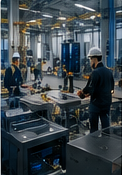
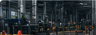
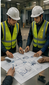
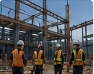
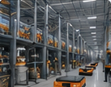

SafeOps 安全管理平台
面向现场作业的安全管理支持系统
把施工状态、区域风险、限制事项与确认记录集中到同一张现场状态板上。

让现场变化可视化
让风险及时共享
让运营与施工更加安全稳定
数据中心 · 工厂 · 持续运营中的改造现场
多家公司同时施工、部分区域持续运营、停电窗口频繁变更、临时风险不断变化——现场信息大量依赖电话、Slack、白板与经验共享。
当信息无法及时同步时，不仅影响工期，更可能带来严重的安全事故与运营风险。
IZUMO SafeOps 正是为这样的现场环境而设计。

什么是 IZUMO SafeOps
IZUMO SafeOps 是一套面向复杂现场环境的「现场安全运营协调平台」。
它不是传统的施工管理软件，也不是单纯的项目进度系统。
SafeOps 更关注的是：
"现场今天是否真的安全、可施工、可运营"
SafeOps 解决的课题
真实现场每天面临的信息与管理挑战

现场信息分散
现场的关键信息往往分散在白板、Slack、Excel、电话、Teams、人工会议中。信息无法实时共享，容易造成误解与遗漏。

现场变化无法及时同步
停电取消、区域封锁、临时高风险作业、材料延迟、多团队施工冲突——这些变化如果无法快速共享，极易导致误施工与安全事故。
多团队协调困难
在数据中心等复杂现场，总包、分包、设备厂家、运维团队、海外系统团队往往同时作业。缺少统一的现场状态共享机制，协调成本极高。

安全经验无法沉淀
事故报告与风险经验通常停留在PDF、Excel、邮件中，类似问题容易重复发生。
现场状态一目了然
实时显示作业区域的安全状态、设备运行数据和预警信息。管理者和现场负责人可随时掌握全局。（概念图）
现场运行状态板
更新：2026-05-28 10:30| 区域名称 | 温度 | 湿度 | 气体 | 噪音 | 状态 |
|---|---|---|---|---|---|
| A区 · 南栋 | 26°C | 55% | 正常 | 68dB | 施工中 |
| B区 · 电力机房 | 24°C | 48% | 正常 | 52dB | 预警 |
| C区 · 中央监控 | 22°C | 50% | 正常 | 45dB | 正常 |
| D区 · 冷却塔 | 31°C | 62% | 正常 | 78dB | 需注意 |
产品特点
用最简单的方式共享最重要的现场变化
实时安全监控
通过轻量化传感器采集现场环境数据（温度、湿度、气体、噪音等），实时监控作业环境安全状态。异常数据自动触发预警。
作业许可管理
将传统的纸质作业许可流程数字化。从申请、审批、现场确认到完工报告，全流程在线管理，不留死角。
风险预警与统计
基于历史数据和实时监控，识别高频风险点和趋势。管理层可通过 dashboard 掌握整体安全状况，做出数据驱动的决策。
10:32 · 未确认
安全事故与风险记录
统一记录事故经过、原因分析、再发防止措施及水平展开，逐步形成现场安全知识库，防止类似问题重复发生。

SafeOps 的特点
不是增加现场负担
而是减少现场混乱。SafeOps 不追求复杂操作，重点在于"用最简单的方式共享最重要的现场变化"。
适用于持续运营中的复杂现场
特别适合数据中心、半导体工厂、自动化物流现场、运营中的设施改造、多团队同时施工现场。

懂现场，才能真正解决现场问题
IZUMO SOAN 不只是软件开发公司。我们长期参与数据中心工程、网络与通信施工、系统现场导入，真正理解现场如何运作。
适用场景
持续运营、多人协作、风险变化频繁的现场

我们的目标
不仅仅是数字化现场
更希望「连接现场、安全与运营」。
让复杂现场：更安全 · 更透明 · 更可协同 · 更可持续运营